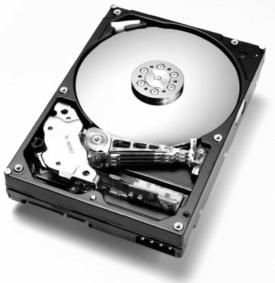
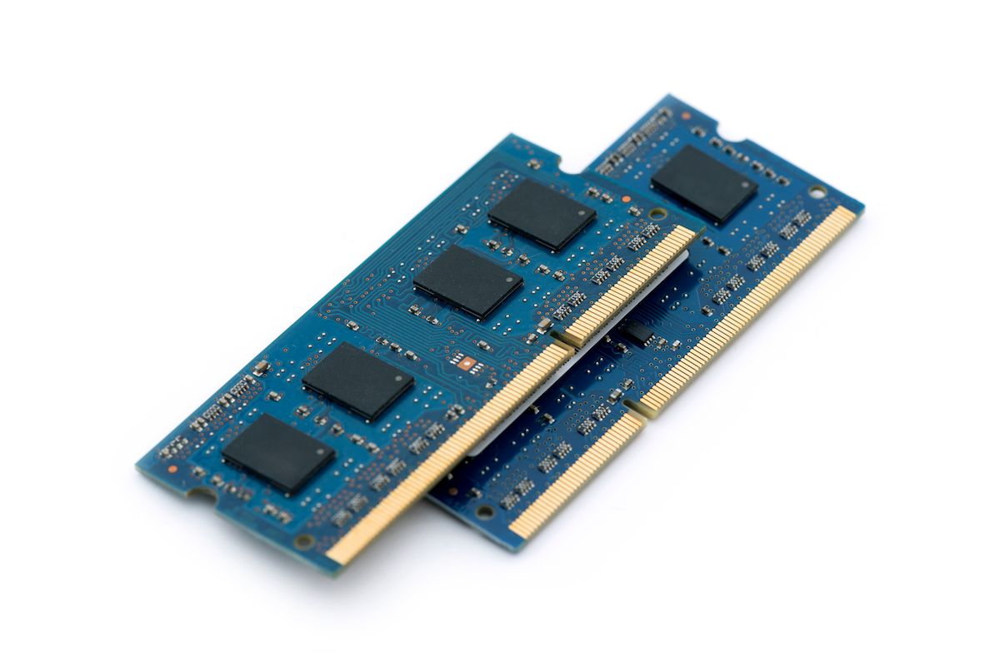

Ntesten alt digitalt utsyr er datamaskiner, og de bygges på samme måte. Men vet du hvordan en datamaskin er faktisk bygd opp? Helt grunidng så består det ac en skjerm, et kabinett med komponenter, et tastatur og en mus. Men det er bygd opp av mye mer: Alle komponentener er kobletsammen via et hovedkort. Dette har flere ontakter som er kobler til andre komponenter som hovedprossesor, harddisk og lydkort. Og nesten alt digitalt ustyr funger på den samme måten:

Hovedkortet, kretskortet, brukes for å koble sammen de forskjellige delene i en datamaskin.

I prosessoren blir koden i et dataprogram lest og utført.

Hardisken, sekundærminnet, lagrer operativsystem programmer og datafiler. PÅ grunn av dette har den stor lagringskapasitet.

I minnebrikket, også kjent som hurtigminne eller RAM, ligger de andre programmene og dataene som skal brukes lagret.

Grafikkort tolker bilder og videoer og viser punktgraf på skjermen.
Nettverkskortet har kommunikasjon med andre datamaskiner og enheter i omgivelsene. Kommunikasjonen er enten via kabel (ethernet, fiber) eller trådløst (Wi-Fi).